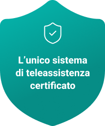

Bracciale Cadute Anziani con GPS, SOS Automatico e Teleassistenza H24
L'unico bracciale per anziani certificato dispositivo medico Classe IIA.
Il bracciale eCura protegge i tuoi cari 24/7: rilevamento cadute con AI, GPS indoor e outdoor, monitoraggio parametri vitali e Centrale Operativa H24 — ovunque si trovino.
Richiedi informazioni su eCura
eCura è il servizio di teleassistenza per anziani di Medica GB Srl che include il bracciale eCura, certificato dispositivo medico Classe IIA (BD/RDM 2853300, CND V0399) ai sensi del Regolamento MDR 2017/745. Attivo in tutta Italia. Detraibile al 19% come spesa sanitaria.
In Italia il 28,6% degli anziani cade almeno una volta l'anno — eCura risponde entro 3-5 secondi, 24 ore su 24, 7 giorni su 7.

Sicuri. Vicini. Ovunque.
Il bracciale eCura per anziani che protegge davvero

Perché il bracciale eCura è diverso dagli altri
Dispositivo Medico Certificato Classe IIA
Misura parametri vitali con accuratezza clinica certificata (BD/RDM 2853300, MDR 2017/745)
Detraibile Fiscalmente al 19%
Come spesa sanitaria detraibile (art. 15 TUIR). Rimborsi INPS disponibili.
Rilevamento Cadute Automatico con AI
Allenata su 14.000 cadute reali. Invia SOS alla famiglia entro 3-5 secondi.
GPS Preciso Indoor e Outdoor
GPS + Wi-Fi beacon + BLE: localizzazione precisa anche dentro casa.
AI Predittiva per Anziani
Individua situazioni di rischio prima che accadano, analizzando pattern comportamentali.
Scelto da 60.000 Utenti in Europa
Tecnologia testata e certificata, sicura, discreta, già in uso in 12 paesi.